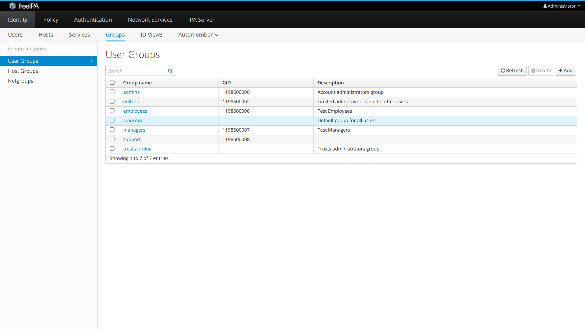

LDAP
Waldur allows you to authenticate using identities from a LDAP server.
Prerequisites
- Below it is assumed that LDAP server is provided by FreeIPA. Although LDAP authentication would work with any other LDAP server as well, you may need to customize configuration for Waldur MasterMind.
- Please ensure that Waldur Mastermind API server has access to the LDAP server. By default LDAP server listens on TCP and UDP port 389, or on port 636 for LDAPS (LDAP over SSL). If this port is filtered out by firewall, you wouldn't be able to authenticate via LDAP.
- You should know LDAP server URI, for example, FreeIPA demo server has
ldap://ipa.demo1.freeipa.org. - You should know username and password of LDAP admin user. For example, FreeIPA demo server uses username=admin and password=Secret123.
Add LDAP configuration to Waldur Mastermind configuration
Example configuration is below, please adjust to your specific deployment.
1 2 3 4 5 6 7 8 9 10 11 12 13 14 15 16 17 18 19 20 21 22 23 24 25 26 27 28 29 30 31 32 33 34 35 36 37 38 39 40 | |
Configuration above is based on LDAP server exposed by FreeIPA. To make it work, there are some things that need to be verified in FreeIPA:
- Ensure that admins and support groups exist in LDAP server. You may do it using FreeIPA admin UI.

- If user is assigned to admins group in LDAP, he becomes staff in Waldur. If user is assigned to support group in LDAP, he becomes support user in Waldur. For example, consider the manager user which belong to both groups:
{kind=link}
{kind=link}
Field mapping
displayName attribute in LDAP is mapped to full_name attribute in Waldur.
mail field in LDAP is mapped to email attribute in Waldur.
Consider for example, the following user attributes in LDAP:
{kind=link}
Here's how it is mapped in Waldur:
{kind=link}
And here's how it is displayed when user initially logs into Waldur via HomePort:
{kind=link}
Last update:
2022-01-05